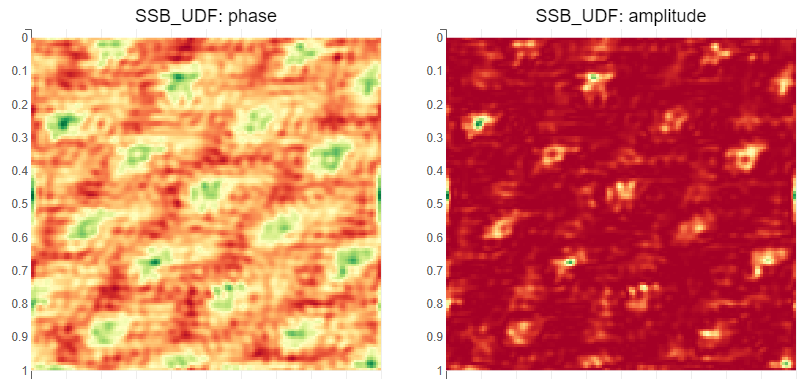

Run Single Side Band (SSB) ptychography on Merlin live streams
This example uses https://github.com/LiberTEM/LiberTEM-live for live processing. See the documentation and examples there for more information and details.
If you want to use this with the simulated data source, LiberTEM-live includes a utility to emulate a Merlin detector by replaying an MIB dataset. To use it, run something like this in the background:
libertem-live-mib-sim ~/Data/default.hdr --cached=MEM --wait-trigger
The --wait-trigger option is important for this notebook to function correctly since that allows to drain the data socket before an acquisition like it is necessary for a real-world Merlin detector.
A suitable dataset can be downloaded at https://zenodo.org/record/5113449.
Make sure to adjust the
SCAN_SIZEbelow to match the scan of the data source!This notebook requires the
bqplotextra of LiberTEM:pip install libertem[bqplot]
[1]:
# set this to the host/port where the merlin data server is listening:
MERLIN_DATA_SOCKET = ('127.0.0.1', 6342)
MERLIN_CONTROL_SOCKET = ('127.0.0.1', 6341)
SCAN_SIZE = (128, 128)
[2]:
import concurrent.futures
[3]:
import time
import logging
import numpy as np
import ipywidgets
from empyre.vis.colors import ColormapCubehelix
[4]:
logging.basicConfig(level=logging.INFO)
[5]:
from libertem.corrections.coordinates import flip_y, rotate_deg, identity
from libertem.analysis import com as com_analysis
from libertem.udf.masks import ApplyMasksUDF
from libertem.common.container import MaskContainer
from libertem.viz.bqp import BQLive2DPlot
[6]:
from libertem_live.api import LiveContext
from libertem_live.detectors.merlin import MerlinControl
[7]:
from ptychography40.reconstruction.ssb import SSB_UDF, generate_masks
from ptychography40.reconstruction.common import wavelength, get_shifted
[8]:
ctx = LiveContext()
Camera setup
[9]:
def merlin_setup(c: MerlinControl, dwell_time=1e-3, depth=6, save_path=None):
print("Setting Merlin acquisition parameters")
# Here go commands to control the camera and the rest of the setup
# to perform an acquisition.
# The Merlin simulator currently accepts all kinds of commands
# and doesn't respond like a real Merlin detector.
c.set('CONTINUOUSRW', 1)
c.set('ACQUISITIONTIME' , dwell_time * 1e3) # Time in miliseconds
c.set('COUNTERDEPTH', depth)
# Soft trigger for testing
# For a real STEM acquisition the trigger setup has to be adapted for the given instrument.
# See the MerlinEM User Manual for more details on trigger setup
c.set('TRIGGERSTART', 5)
c.set('RUNHEADLESS', 1)
c.set('FILEFORMAT', 2) # 0 binary, 2 raw binary
if save_path is not None:
c.set('IMAGESPERFILE', 256)
c.set('FILEENABLE', 1)
c.set('USETIMESTAMPING', 0) # raw format with timestamping is buggy, we need to do it ourselves
c.set('FILEFORMAT', 2) # raw format, less overhead?
c.set('FILEDIRECTORY', save_path)
else:
c.set('FILEENABLE', 0)
print("Finished Merlin setup.")
def microscope_setup(dwell_time=1e-3):
# Here go instructions to set dwell time and
# other scan parameters
# microscope.set_dwell_time(dwell_time)
pass
def arm(c: MerlinControl):
print("Arming Merlin...")
c.cmd('STARTACQUISITION')
print("Merlin ready for trigger.")
def set_nav(c: MerlinControl, aq):
height, width = aq.shape.nav
print("Setting resolution...")
c.set('NUMFRAMESTOACQUIRE', height * width)
# Only one trigger for the whole scan with SOFTTRIGGER
# This has to be adapted to the real trigger setup.
# Set to `width` for line trigger and to `1` for pixel trigger.
c.set('NUMFRAMESPERTRIGGER', height * width)
# microscope.configure_scan(shape=aq.shape.nav)
Trigger function
[10]:
class AcquisitionState:
def __init__(self):
self.trigger_result = None
def set_trigger_result(self, result):
self.trigger_result = result
[11]:
acquisition_state = AcquisitionState()
pool = concurrent.futures.ThreadPoolExecutor(1)
[12]:
def trigger(aq):
print("Triggering!")
# microscope.start_scanning()
time.sleep(1)
height, width = aq.shape.nav
# Real-world example: Function call to trigger the scan engine
# that triggers the detector with a hardware trigger to match the scan of the beam.
# This function is blocking until the scan is complete.
# do_scan = lambda: ceos.call.acquireScan(width=width, height=height+1, imageName="test")
# Testing: Use soft trigger
# The emulator can trigger on the 'SOFTTRIGGER' command like the Merlin detector.
def do_scan():
'''
Emulated blocking scan function using the Merlin simulator.
This function doesn't actually block, but it could!
'''
print("do_scan()")
with c:
c.cmd('SOFTTRIGGER')
# The real-world scan function might be blocking. We run it in a thread pool here
# so that `trigger()` returns and the acquisition can start.
fut = pool.submit(do_scan)
acquisition_state.set_trigger_result(fut)
[13]:
aq = ctx.prepare_acquisition(
'merlin',
trigger=trigger,
scan_size=SCAN_SIZE,
host=MERLIN_DATA_SOCKET[0],
port=MERLIN_DATA_SOCKET[1],
frames_per_partition=800,
pool_size=2
)
SSB setup
See also https://ptychography-4-0.github.io/ptychography/algorithms/ssb.html for a more complete example!
[14]:
ds_shape_sig, ds_shape_nav = aq.shape.sig, aq.shape.nav
# Acceleration voltage in keV
U = 300
rec_params = {
"dtype": np.float32,
"lamb": wavelength(U),
"dpix": 12.7e-12,
"semiconv": 22.1346e-3, # 2020-05-18
"semiconv_pix": 31, # 2020-05-18
# applied right to left
"transformation": rotate_deg(88) @ flip_y(),
"cx": 123,
"cy": 126,
"cutoff": 16, # number of pixels: trotters smaller than this will be removed
}
cutoff_freq = np.float32('inf')
mask_params = {
# Shape of the reconstructed area
'reconstruct_shape': tuple(aq.shape.nav),
# Shape of a detector frame
'mask_shape': tuple(aq.shape.sig),
# Use the faster shifting method to generate trotters
'method': 'shift',
}
[15]:
%%time
trotters = generate_masks(**rec_params, **mask_params)
Wall time: 9.63 s
[16]:
mask_container = MaskContainer(
mask_factories=lambda: trotters, dtype=trotters.dtype, count=trotters.shape[0]
)
WARNING:libertem.common.container:Mask factory size 72596502 larger than warning limit 1048576, may be inefficient
[17]:
ssb_udf = SSB_UDF(**rec_params, mask_container=mask_container)
[18]:
# Create the plots for the SSB result
p0 = BQLive2DPlot(aq, ssb_udf, channel="phase")
p1 = BQLive2DPlot(aq, ssb_udf, channel="amplitude")
COM setup
This example uses advanced live plotting features of LiberTEM to create a live plot of the data analysis that the COM Analysis performs.
[19]:
# Masks are sum, y gradient, x gradient
masks = com_analysis.com_masks_factory(
detector_y=aq.shape.sig[0],
detector_x=aq.shape.sig[1],
cx=rec_params["cx"],
cy=rec_params["cy"],
r=rec_params["semiconv_pix"] + 30,
)
com_udf = ApplyMasksUDF(masks)
def center_shifts(udf_result):
'''
Derive center of mass results from the UDF results
and apply coordinate correction.
'''
y_centers_raw, x_centers_raw = com_analysis.center_shifts(
img_sum=udf_result['intensity'].data[..., 0],
img_y=udf_result['intensity'].data[..., 1],
img_x=udf_result['intensity'].data[..., 2],
ref_y=rec_params["cy"],
ref_x=rec_params["cx"],
)
shape = y_centers_raw.shape
y_centers, x_centers = rec_params['transformation'] @ (y_centers_raw.reshape(-1), x_centers_raw.reshape(-1))
y_centers = y_centers.reshape(shape)
x_centers = x_centers.reshape(shape)
return (y_centers, x_centers)
def field(udf_result, damage):
ch = ColormapCubehelix(start=1, rot=1, minLight=0.5, maxLight=0.5, sat=2)
shifts = center_shifts(udf_result)
# damage = True because of https://github.com/LiberTEM/LiberTEM/issues/1052
return (ch.rgb_from_vector((shifts[0], shifts[1], 0)), True)
def magnitude(udf_result, damage):
return (com_analysis.magnitude(*center_shifts(udf_result)), damage)
def divergence(udf_result, damage):
return (com_analysis.divergence(*center_shifts(udf_result)), damage)
def curl(udf_result, damage):
return (com_analysis.curl_2d(*center_shifts(udf_result)), damage)
def y(udf_result, damage):
return (center_shifts(udf_result)[0], damage)
def x(udf_result, damage):
return (center_shifts(udf_result)[1], damage)
com_plots = []
for f in field, magnitude, divergence, curl, y, x:
p = BQLive2DPlot(
dataset=aq,
udf=com_udf,
channel=f,
)
com_plots.append(p)
Plot setup for gridded display
[20]:
plots = [p0, p1] + com_plots
[21]:
# NBVAL_IGNORE_OUTPUT
# (output is ignored in nbval run because it somehow doesn't play nice with bqplot)
outputs = []
for p in plots:
# Capture the plots to display them in a grid later
output = ipywidgets.Output()
with output:
p.display()
# Some plot-specific tweaks for grid display
if isinstance(p, BQLive2DPlot):
p.figure.fig_margin={'top': 50, 'bottom': 0, 'left': 25, 'right': 25}
p.figure.layout.width = '400px'
p.figure.layout.height = '400px'
elif isinstance(p, MPLLive2DPlot):
p.fig.tight_layout()
p.fig.set_size_inches((3, 3))
p.fig.canvas.toolbar_position = 'bottom'
outputs.append(output)
[22]:
ipywidgets.VBox([
ipywidgets.HBox(outputs[0:2]),
ipywidgets.HBox(outputs[2:4]),
ipywidgets.HBox(outputs[4:6]),
ipywidgets.HBox(outputs[6:8]),
])
Sample output
The plots are not preserved when saving the notebook. They look like this:
Run SSB and centre of mass on live data
This updates the plots above.
[23]:
c = MerlinControl(*MERLIN_CONTROL_SOCKET)
print("Connecting Merlin control...")
with c:
merlin_setup(c)
microscope_setup()
set_nav(c, aq)
arm(c)
try:
ctx.run_udf(dataset=aq, udf=[ssb_udf, com_udf], plots=plots)
finally:
try:
if acquisition_state.trigger_result is not None:
print("Waiting for blocking scan function...")
print(f"result = {acquisition_state.trigger_result.result()}")
finally:
pass #microscope.stop_scanning()
print("Finished.")
Connecting Merlin control...
Setting Merlin acquisition parameters
Finished Merlin setup.
Setting resolution...
Arming Merlin...
Merlin ready for trigger.
INFO:libertem_live.detectors.merlin.acquisition:drained 21504 bytes of garbage
Triggering!
INFO:libertem_live.detectors.merlin.data:got headers; frame offset = 0
do_scan()
Waiting for blocking scan function...
result = None
Finished.
[ ]: